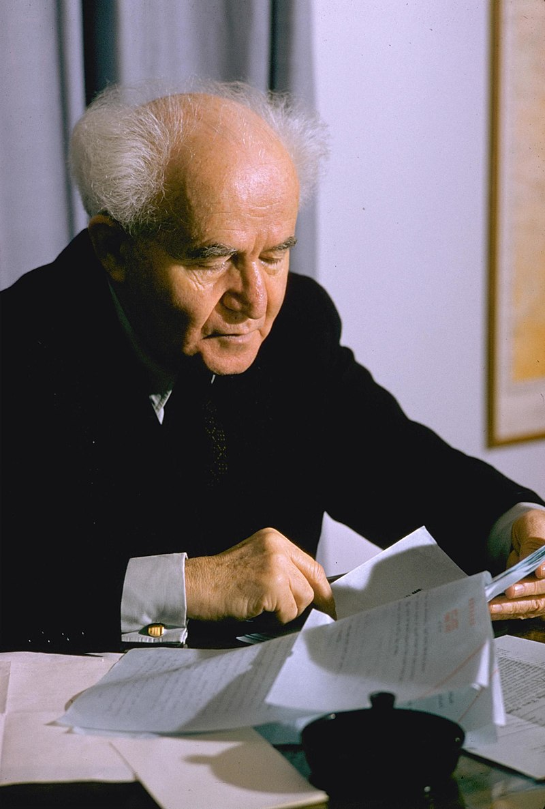
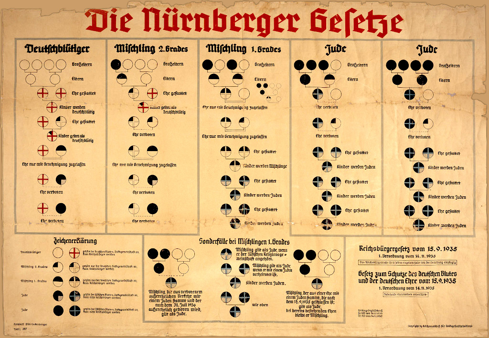
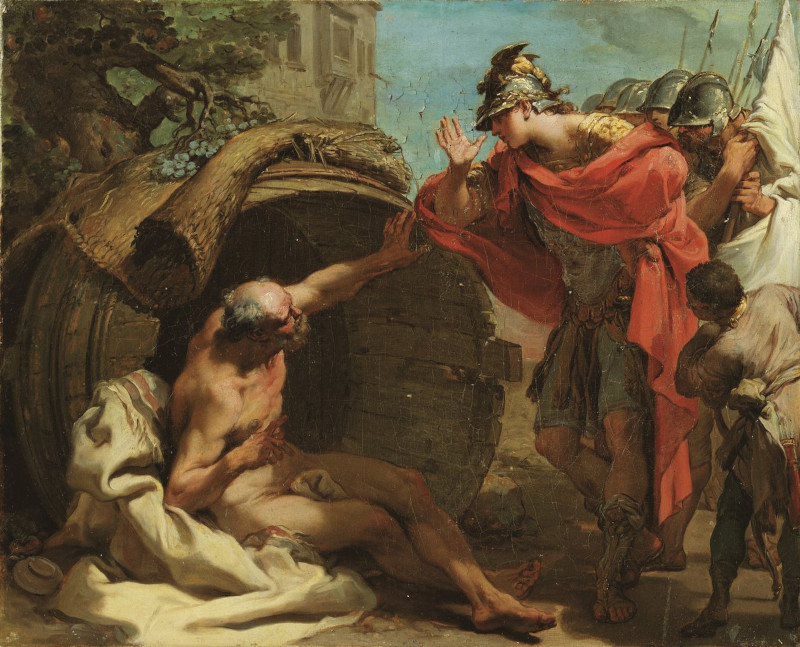

1958 brauchte Ben Gurion eine rechtssichere Definition von "Jude" für ein Gesetzesvorhaben im jungen Israel. Er fragte seine Berater, doch diese fingen sofort an sich zu streiten. So schrieb er 50 Briefe an 50 jüdische Gelehrte in der ganzen Welt. Zwar bekam er 50 Antworten, doch darin wurden 60 verschiedene Meinungen vertreten.
Eins war aber allen gemein: wer von einer jüdischen Mutter geboren wurde, ist Jude. Das ist auch nachvollziehbar, denn quer durch die Geschichte wurden jüdische Mädchen so oft vergewaltigt, es wäre unmenschlich gewesen ihre unehelichen Kinder dafür zu bestrafen, so wie die Katholiken es taten. Im Übrigen ähnelt diese Regelung der früheren deutschen Jus Sanguinis und die kennen sich aus mir Rassegesetzen.

Doch nur die mütterliche Abstammung reichte den Deutschen nicht. Sie wollten mehr Juden vergasen, als jüdische Gemeinden akzeptiert hätten. So malten sie komplizierte Schautafeln und zeichneten, angefangen bei den Großeltern, leere Kreise, volle Kreise, halbe Kreise bis hin zu Achtelkreisen. Dann schraffierten sie noch manche Kreissegmente. Doch immer noch blieben Sonderfälle, etwa wie zu verfahren mit einem Arier, der beschlossen hatte zu konvertieren? Und weil Deutschland immer schon ein Rechtsstaat war, gab es auch juristische Unterschiede, etwa zwischen fahrlässigen Babys, die aus Mischehen vor den Rassengesetzen stammten und den vorsätzlichen Babys, aus Beziehungen danach. Schließlich gaben sie es auf und schickten alle ins Gas.
Doch abgesehen von den Juden gibt es auch noch das Judentum und dessen Geschichte fängt bei Diogenes und Alexander dem Großen an. Als Alexander noch nicht so groß war und erst einige Dörfer erobert hatte, begannen auch schon seine Zores mit den unterworfenen Dörflern die ständig rebellierten, sodass er seine ganze Armee zu deren Bewachung einsetzen musste. Er suchte Rat bei Diogenes.

"Mensch, erzähl ihnen doch nicht, sie sei unterworfene Vasallen. Sag ihnen lieber, du hättest sie errettet, nun sein sie freie Bürger deines mächtigen Reiches und die Soldaten sein nicht ihre Bewacher, vielmehr ihre Beschützer. Endlich könnten sie ohne Furcht leben, denn sollte ein böser Feind auftauchen, würdest du sofort kommen und ihn vertreiben, auf dass die Erde bebe"Seine Feldzüge liefen prächtig, jedenfalls bis er nach Palästina kam und auf die Juden traf. In Jerusalem diskutieren die Rabbiner drei Tage und drei Nächte über sein Angebot, was für Juden unheimlich schnell ist, verwarfen es aber. "Wir haben nichts gegen dich und würden sogar gern in deinem Reich wohnen. In fremden Ländern zu leben ist voll unser Ding. Aber wir können uns nicht assimilieren lassen. Unsere Mädchen schielen schon jetzt nach den sexy griechischen Diskuswerfern. Wenn wir unsere Eigenständigkeit aufgeben, sind wir in ein oder zwei Generationen keine Juden mehr, sondern huldigen Zeus und einem Dutzend andere Götter, nicht mehr dem Einzig-Wahren. Das kann nicht sein."
Dass die Juden einem mächtigen Feldherren die Stirn boten und das nach ihren kürzlichen Erfahrungen mit Nebukadnezar, imponierte dem Hegemon sehr. Auch seine Philosophen wie etwa Theophrastos von Eresos und Megasthenes schrieben mit Hochachtung über das Judentum. Im Gegenzug betrachten jüdische Gelehrte bis heute Pythagoras und Platon als legitime Schüler Moses. Uns so kam es, dass Alexander die Juden nicht wie gewohnt massakrieren ließ, sondern im Gegenteil, ihnen ganz Palästina, quasi als jüdische Enklave überließ, wo sie nach eigenen Gesetz glücklich werden sollten.
Diese Einstellung verfestigte sich zu jüdischen Identität und ist verantwortlich für die Tatsache, dass Juden als Volk 2500 Jahre ohne ein eigenes Land überdauern konnten. Sie ist auch für die Abspaltung des Christentums verantwortlich, denn als die an Christus glaubenden Juden anfingen Nicht-Juden in ihrer Reihen aufzunehmen, musste es zwangsläufig zu einer Zäsur kommen.
Übrigens war Alexander nicht der einzige Eroberer, der von den Juden beeindruckt war. Ok, mit den Römern und den Osmanen lief es nicht ganz so gut.
Aber im Jahr 1799, während seines Feldzugs im Nahen Osten, proklamierte Kaiser Napoleon Bonaparte öffentlich Palästina als Land der Juden.
Die Briten, die nach ihm dort herrschten, haben Palästina am 2. November 1917 offiziell durch die sogenannte Balfour-Deklaration zur „nationalen Heimstätte für das jüdische Volk“ bestimmt.
1922 mandatierte der Völkerbund, die damalige UN, Großbritannien mit der Aufgabe, endlich einer Heimstätte für das jüdische Volk in Palästina zu errichten. Beigefügt war eine Karte, auf der das neue Land der Juden zu sehen war. Von Zwei-Staaten-Lösung, annektierten Gebieten, illegalen Siedlungen und dergleichen war damals noch nicht die Rede. Bevor die Juden kamen war da ja nichts, nur Wüste.
Und um ein Haar wäre sogar der Holocaust verhindert worden, denn selbst Nazis waren beeindruckt. 1933 reiste der SS Offizier Leopold von Mildenstein mit seinem jüdischen Freud und Zionisten Kurt Tuchler nach Palästina und schrieb anschließend eine enthusiastische, 12-teilige Artikelserie über die Juden im Heiligen Land. Diese beeindruckte sogar Joseph Goebbels so sehr, dass er sie im Völkischen Beobachter, dem offiziellen Partei Organ der NSDAP, abdrucken ließ. Mann faste den Plan, die Juden nach Palästina zu expedieren und prägte sogar schon eine Gedenkmedaille. Leider scheiterte das Vorhaben an Mohammed al-Husseini, Al-Husseini
bezeichnete die Juden als "bitterste Feinde der Araber" und als "Gefahr für den gesamten Orient" und rief zur "Vertreibung aller Juden aus Palästina und der arabischen Welt" auf.
In einer Rede 1944 forderte er die Araber auf: "Tötet die Juden, wo immer ihr sie findet. Das gefällt Gott, der Geschichte und der Religion."
1947 lehnte er den UN-Teilungsplan ab:
Man akzeptiere keine Souveränität einer fremden Minderheit (der Juden) auf arabischem Land.
Man sei bereit, für ein ungeteiltes, arabisch beherrschtes Palästina zu kämpfen.
Dann rief er zum Überfall auf Israel am 1. Tag seines Bestehen 1948 auf: "Ich erkläre einen Heiligen Krieg. Meine Brüder im Islam! Tötet die Juden! Tötet sie alle!"
Heute demonstrieren Tag-für-Tag Palästinenser, mit Unterstützung ihrer deutschen Freunde, in Berlin gegen Israel und skandieren exakt die selben Texte.
dem palästinensischen Mufti von Jerusalem. Der gründete im Heiligen Land einen Ortsverband der NSDAP, unterstützte die NS-Propaganda und ermutigte die Bildung muslimischer Waffen-SS Einheiten für den Kampf gegen die Briten. 1941, als die Deutschen Bomben auf Haifa warfen, traf er Adolf Hitler sogar persönlich und redete ihm entgültig aus, die Juden nach Palästina auswandern zu lassen. Das war nicht schwer, denn Hitler brauchte dringend Verbündete in der Region um den Suezkanal zu kontrollieren und sein Freund al-Husseini konnte wertvolle Kontakte in die muslimische Welt vermitteln. Der Rest ist Geschichte…
Das Gegenteil von Jude ist übrigens ein Goy. Goy ist kein abwertender Begriff, nur ein höchst sonderbarer. Bedenkt man nämlich, dass lediglich 0.1% der Menschen jüdisch sind, so haben wir Juden also einen eigenen Begriff für uns und einen für den Rest, also 99.9% der Menschheit. Die 0,1% sind natürlich nur eine Schätzung. So lebten bis 1989 weniger als 30.000 Juden in ganz Deutschland. Dann kam die Perestroika und mit ihr kamen gut 220.000 Juden aus der UdSSR. Es wird geschätzt, dass das 3x so viele Juden waren, als jemals in der Sowjetunion gelebt hatten.
In Israel ist die Lage ähnlich. Ich persönlich habe zwei Freunde aus der Sowjetunion. Der eine ist Gregorii, der ein renommierter Chemiker war und Angebote aus den USA hatte. Er entschied sich aber für Israel und lehrt seitdem an der Universität Jerusalem. Der andere ist Nikolai der lieber in die USA gegangen wäre, doch kein Visum bekam. Er wusste aber, dass Israel Juden aufnehme. Zwar hatte er Bedenken, denn er war kein Jude, kannte keine Juden und hatte auch keine Ahnung von ihrer Religion oder Kultur, aber es erwies sich als ganz einfach. Er kreuzte die richtige Box an, bekam einen Pass, und arbeitet seitdem an der Uni Tel Aviv.
Wobei man sagen muss, dass es schon sehr lange her ist, dass noch viele Europäer nach Israel einwanderten. Als ich das erste Mal nach Israel kam, waren auf den Straßen jede Menge Menschen mit Nummern auf den Armen unterwegs. Ich hatte ständig das Gefühl, ich sollte hingehen und sie begrüßen, wir müssten ja irgendwie verwandt sein.
Als ich das letzte Mal in Israel war, fühlte ich mich nicht nur fremd, sondern unangenehm fremd. Aus dem Libanon, Syrien, Jordanien, Marocco, von überallher waren Mizrahi-Juden eingewandert. Die alten Ashkenazi sind verstorben, die jungen selbst zu Mizrahi geworden. Israel hatte sich in ein arabisches Land verwandelt.
Aber genug. Wir waren eigentlich bei meiner Mutter stehengeblieben.